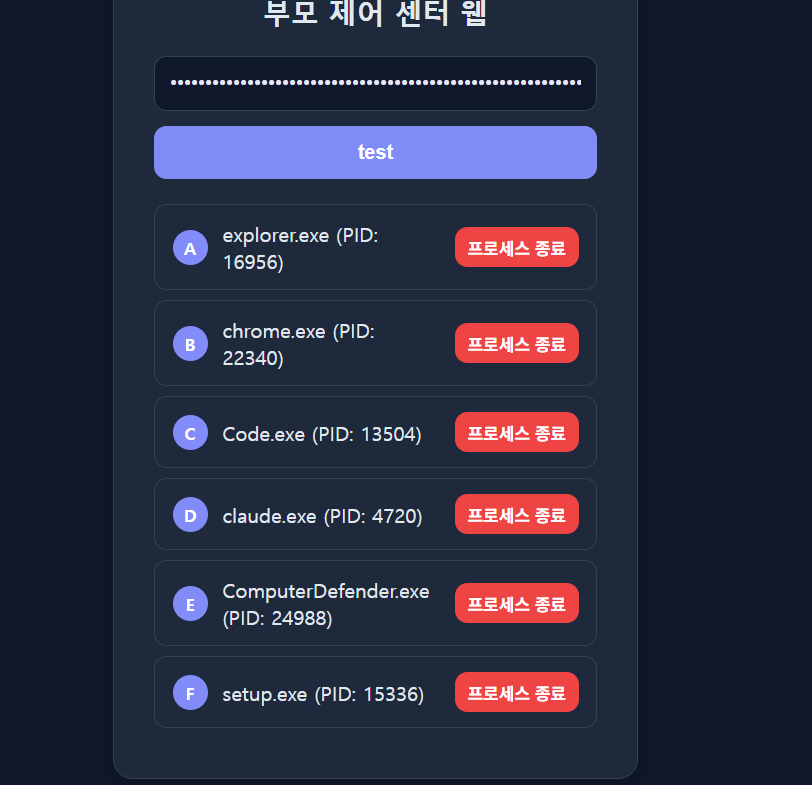
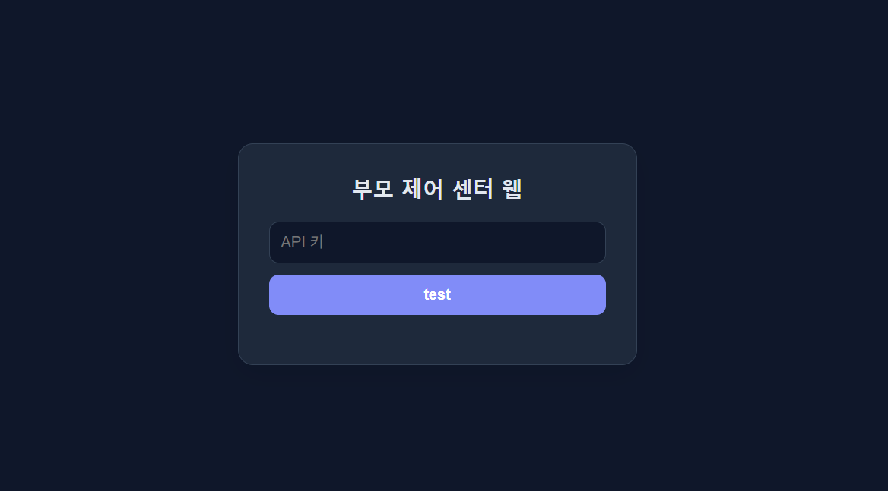
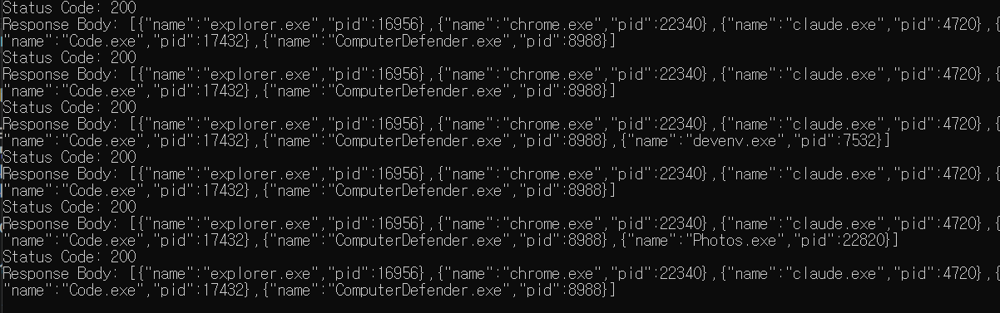

C++
WinAPI로 프로세스를 다룹니다. OpenProcess로 핸들을 열고 TerminateProcess로 종료한 뒤 CloseHandle로 핸들을 닫습니다. 헤더 파일에서 RAII를 사용해 핸들이 자동으로 정리되도록 했습니다.
대구 동중학교 3학년 권오성입니다. 코딩을 1~2년 배우며 실행 중인 프로세스를 확인하고 관리하는 ComputeDefend를 만들었습니다.

제가 찾아본 자녀 컴퓨터 제어 앱은 한 달에 1만 원이 넘어 부담스럽게 느껴졌습니다. 부모님의 부담을 줄이고 싶어, 제가 배운 지식으로 직접 만들어 보기로 했습니다.
카카오 AI 루키 캠프에서 컴퓨터공학과 여러 기술을 배우고, AI를 활용하는 능력을 키우고 싶습니다. 무엇보다 여러 사람과 의견을 나누며 함께 만드는 경험을 쌓고 싶습니다.
시험 기간에도 컴퓨터 사용을 스스로 조절하기 어려워, 외부에서 도와주는 도구가 필요하다고 느꼈습니다. 처음에는 큰 프로젝트를 만들려다 진척이 없었습니다. 그래서 작은 기능부터 하나씩 완성하는 방식으로 바꿨습니다.
이 과정을 거쳐 MVP를 만들었고, 작은 완성이 코딩에 대한 자신감으로 이어졌습니다.
C++가 화면에 보이는 창을 가진 앱 목록을 수집합니다. HTTP 요청으로 목록을 보내고, 폴링으로 종료 명령을 가져옵니다.
Python FastAPI 서버가 목록과 종료 명령을 중개합니다. 현재 코드는 Upstash Redis를 사용하며, 로컬에서는 메모리 저장소로도 동작합니다.
브라우저는 SSE로 목록 변경을 받아 표시하고, Fetch API로 종료 요청을 보냅니다. 새로고침 없이 목록을 갱신합니다.
개발은 혼자 시작했지만, 코딩학원 선생님과 의견을 나눴습니다. 가장 기억에 남는 제안은 “모든 프로세스 대신 앱만 가져오고, 백그라운드 프로세스는 제외하자”는 것이었습니다.
현재 코드는 화면에 보이는 최상위 창을 가진 앱을 골라 목록에 담습니다. 다른 사람의 의견이 기능의 방향을 더 명확하게 만들 수 있다는 것을 느꼈습니다.
캠프에서도 제 생각을 설명하고 다른 사람의 의견을 들으며, 함께 문제를 해결하는 능력을 기르고 싶습니다.
코딩을 1~2년 배우며 C++, Python, 웹 기술을 사용했습니다. 프로세스 종료 요청이 웹에서 C++까지 전달되는 과정을 직접 설계했습니다.
처음에는 AI를 활용한 코딩에 부정적이었지만, 이 프로젝트에서 Claude Code를 사용하며 생각이 바뀌었습니다. 설계와 코딩 지식을 바탕으로 AI를 활용하면 느린 개발 속도를 보완할 수 있다는 것을 배웠습니다.
WinAPI로 프로세스를 다룹니다. OpenProcess로 핸들을 열고 TerminateProcess로 종료한 뒤 CloseHandle로 핸들을 닫습니다. 헤더 파일에서 RAII를 사용해 핸들이 자동으로 정리되도록 했습니다.
종료 명령을 큐에 넣고 C++ 클라이언트가 가져가도록 합니다. API 키를 확인하고, SSE로 브라우저에 목록 변경을 전달합니다.
프로세스 목록을 보여주고, fetch로 종료 요청을 JSON 형식으로 보냅니다.
실행 중인 프로세스를 웹에서 확인하고, 필요한 프로세스를 종료하는 관리 시스템입니다. 현재 MVP를 완성했고 기본 동작을 확인했습니다.


큰 목표를 작은 기능으로 나누며 MVP를 완성했고, 선생님의 의견을 통해 기능을 바라보는 시야도 넓혔습니다. 앞으로도 배운 것을 실제로 만들어 보며 성장하고 싶습니다.
카카오 AI 루키 캠프에서 기술과 AI 활용 능력을 키우고, 여러 사람과 함께 더 나은 해결 방법을 찾고 싶습니다.